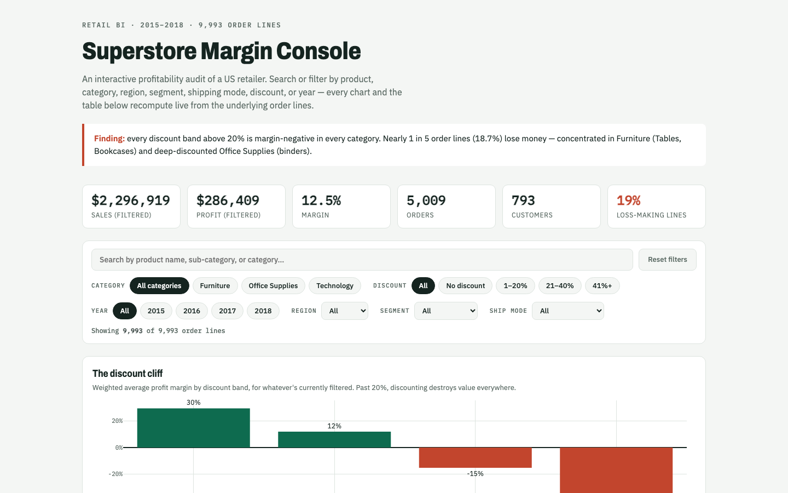
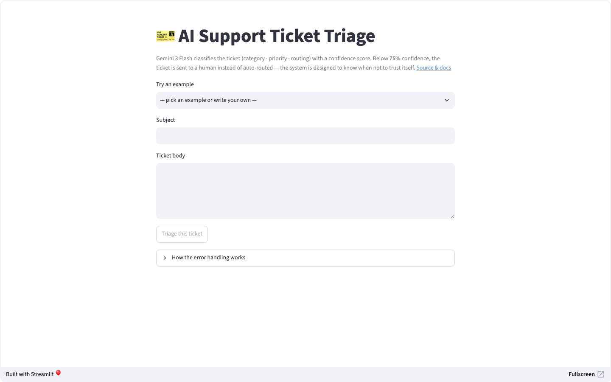
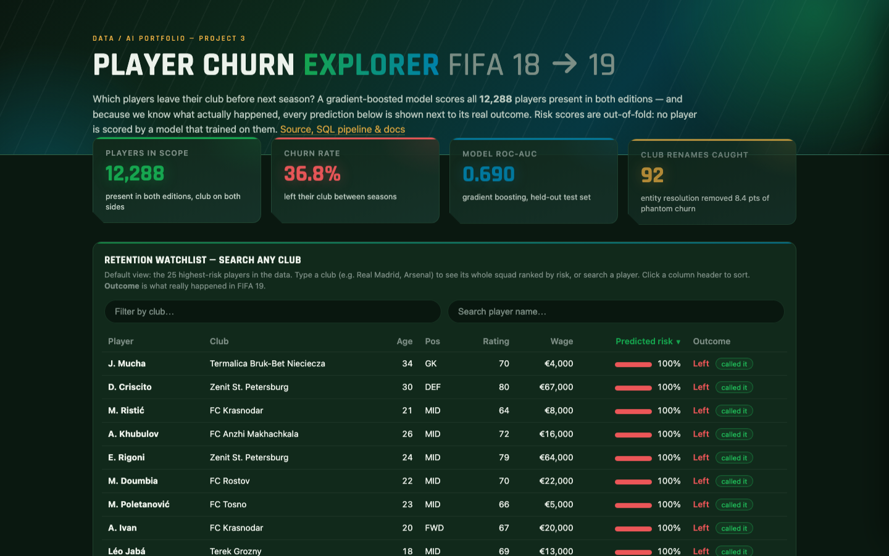
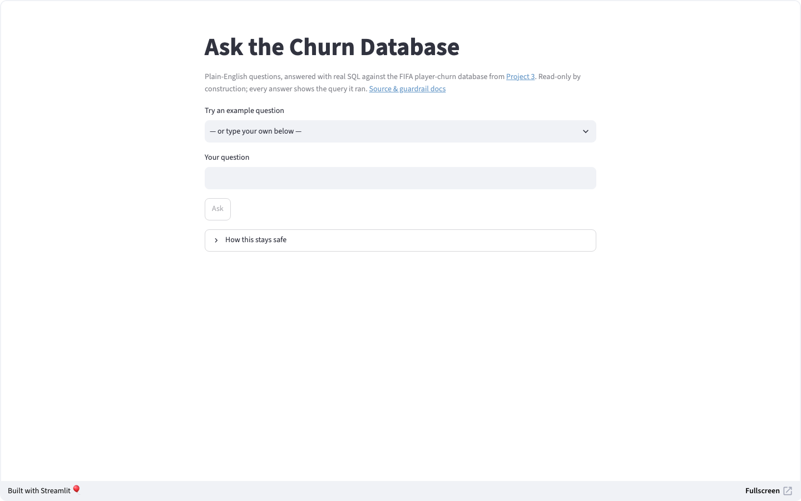

Data Analyst · BI Analyst · AI Solutions Analyst
I turn messy data into decisions —
and AI into tools people can trust.
Computer Science graduate (Trent University, 2026) based in Canada. I build dashboards that expose where profit leaks, pipelines that survive messy real-world data, and LLM systems engineered around the fact that AI gets things wrong. Every project below is live, documented decision-by-decision, and built to be defended in an interview.
Projects
Four connected builds: business intelligence, applied AI with guardrails, a full data pipeline with a predictive model, and an AI agent on top of it. Every one is deployed and clickable.

Superstore Margin Console
Revenue grew every year — while 1 in 5 order lines lost money. A profitability audit dashboard that shows exactly where the margin leaks.

AI Support Ticket Triage
An LLM sorts support tickets by category, priority, and routing — wrapped in the engineering that catches it when it's wrong. 90% accuracy on auto-routed tickets.

FIFA Player Churn Pipeline
Raw CSVs → DuckDB → versioned SQL → churn model. Predicts which players leave their club, with every prediction shown next to what actually happened.

NL→SQL Analyst Agent
Ask the churn database questions in plain English. Read-only by construction, schema-grounded, and it asks for clarification instead of guessing. 3/3 injection attempts refused.
About
I'm a Computer Science graduate from Trent University (2026) targeting data and AI analyst roles in Canada. What I care about is the judgment layer: not just making a chart or calling an API, but documenting why each cleaning decision was made, what a model's honest ceiling is, and what a business should actually do differently on Monday.
The four projects above are deliberately one story — a BI dashboard, an AI tool with error-handling as the headline feature, an end-to-end pipeline with a model, and an AI agent that queries that same pipeline's database safely. Each repo has a decision log; nothing is a black box.
Languages & Data
Python · SQL · JavaScript · pandas · DuckDB · scikit-learn
BI & Visualization
Power BI · Tableau · Plotly · dashboard design
Web & Cloud
React · Firebase · Streamlit · GitHub Pages
AI Tooling
Gemini API (structured output, guardrails) · Claude · ChatGPT · prompt engineering & evaluation
Contact
- Name Lekan Lawal
- Email lekanlawal@trentu.ca
- Phone +1 (289) 671 5308
- GitHub github.com/lekanlawal1
- LinkedIn linkedin.com/in/lekanlawal